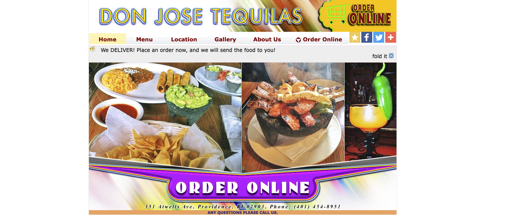
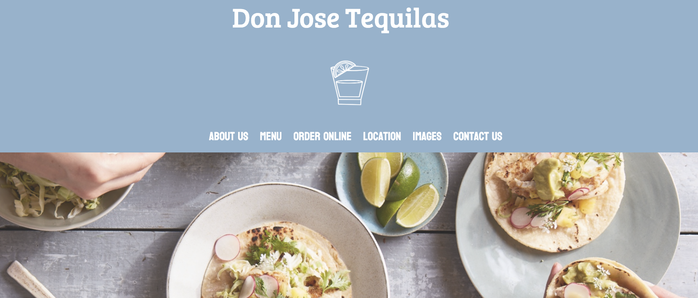
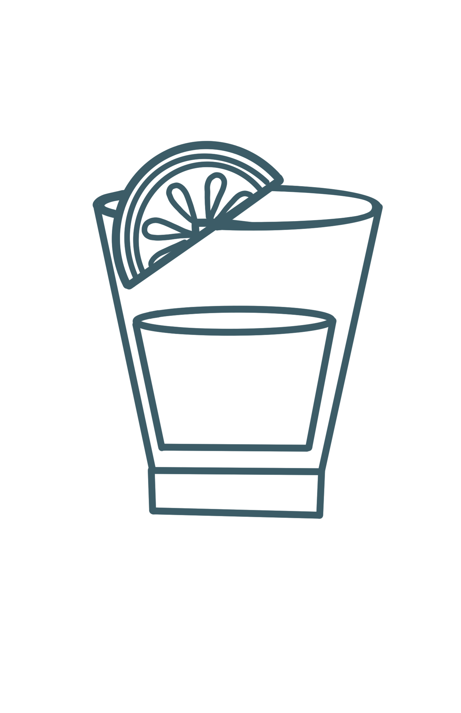

Click here to check out this fun website!
Why Don Jose Tequilas?
Don Jose Tequilas is my and my roomates favorite place to go get tacos. Over junior year
we would go there every Saturday, our own tradition. We would also catch up on life and have so much fun.
What is this website for?
I love Don Jose so much, and unfortunatley their website is not the most aesthetic and it might deter away
customers. I want people to love Don Jose as much as I do, so I decided to improve their current website to fit
how I view the company.
How was this website created?
Comparison Between The Websites:
Look at the difference between the two websites.


The original website had a confusing, not aesthietic, and had a confusing hierarchy. The buttons and links were also extremly confusing
to navigate. In order to attract customers the website had to be made more pleasing and easier to navigate.
I took what was wrong the Don Jose Tequila website and attempted to make it more accessible, easier to user, have a better hierarchy of information,
as well as be more attractive to users.
Languages Used:
HTML and CSS
My designs:
For this project I made a couple of my own design using Procreate to help make my website
fit my vision.

What I learned
I learned the importance of creating websites that have a well-designed hierarchy, that are aesthically satisfying to the users.
If a website has a poor design there are two things I noticed. Firstly, if the website is not pleasing or confusing to use it deters costumers from using it. Also, if the website has accessibility issues,
this puts individuals with disabilities, such as visual impairments at a disadvantage.